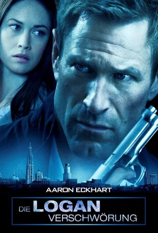

#5987 Die Logan Verschwörung
Alternativ: Erased
 
 IMDB-Wertung: 6.1 / 10
IMDB-Wertung: 6.1 / 10  Metascore: 0
Metascore: 0 
Der ehemalige CIA-Agent Ben Logan führt inzwischen ein ruhiges unauffälliges Leben: Er hat eine Teenager-Tochter namens Amy und arbeitet bei einem normalen Wirtschaftsunternehmen. Eines Tages kommt er in Begleitung seiner Tochter zur Arbeitsstelle und findet alles verlassen vor: Es gibt keine Arbeiter oder auch nur eine Spur davon, dass dort je gearbeitet wurde. Dann kommt doch noch ein Mitarbeiter zu ihm, aber er erklärt ihm die Situation nicht etwa, sondern entführt ihn und seine Tochter kurzerhand. Es stellt sich heraus, dass Logan im Zentrum einer internationalen Verschwörung steht und seine eigene Vergangenheit dabei eine große Rolle spielt. Durch seine Fähigkeiten, die er bei der Arbeit für das CIA erlernt hat, ist er jedoch für den Überlebenskampf mit seiner Tochter mehr als gut gerüstet. Außerdem wird die hübsche CIA-Agentin und seine Ex-Geliebte Anna Brandt auf ihn und seine Tochter angesetzt.
Jahr: 2012
Dauer: 104 Minuten
FSK: 16
Land: USA Studio: RADiUS-TWCTonspuren: DTS - ,
Untertitel: Deutsch,
Auflösung: 1080p (1920x816) Größe: 9123 MB
Genre: Action, Thriller
Regisseur: Philipp Stölzl
Drehbuch: Aimee Lagos
Soundtrack:
Darsteller:
 Aaron Eckhart als Ben Logan
Aaron Eckhart als Ben Logan Liana Liberato als Amy Logan
Liana Liberato als Amy Logan Olga Kurylenko als Anna Brandt
Olga Kurylenko als Anna Brandt Garrick Hagon als James Halgate
Garrick Hagon als James Halgate Eric Godon als Maitland
Eric Godon als Maitland- Yassine Fadel als Nabil
 Neil Napier als Derek Kohler
Neil Napier als Derek Kohler Alexander Fehling als Floyd
Alexander Fehling als Floyd Nick Alachiotis als Walter
Nick Alachiotis als Walter- Fabrice Boutique als Karim
- Ron White als Dick Rhodes
 Carlo Mestroni als Field Officer
Carlo Mestroni als Field Officer- Simone-Élise Girard als Halgate Lobby Receptionist
- Jade Hassouné als Abdi
- Keir Cutler als Euro Ops
 Brett Watson als Clusters
Brett Watson als Clusters- Kate Linder als Principal Gibbons
- Lidia Aviles als Girl at hotel , uncredited
- Vincent Doms als Security Officer , uncredited
- CinSyla Key als Hotel manager , uncredited
- Kim Selby als Lorraine , uncredited
- Sebastien Soudais als Hooded figure , uncredited
- David Bark-Jones als Marty Braymer
- Ronnie Commissaris als Karl Van Doorn
- Debbie Wong als Mei Ling
- Katelijne Verbeke als Sophie Pieters
- Alexandre von Sivers als Hans Pieters
- Hassaba Halibi als Fatima
- John Dobrynine als Pieter's Attorney
- Ben Van Ostade als Judge
- Maxime Paradis als Morgue Attendant
- Brahim Waabach als Mourad
- Kent McQuaid als Autoroute Cop #1
- Sasha Dominique als Doctor Antwerp
- Maxime Morin als Realtor
- Richard Robitaille als Halgate Lobby Security Guard
- Danny Blanco Hall als Analyst
- Calista Somwe als Karim's Daughter
- Zaire Souchi als Arabic Neighbor
- Cyril Kengne als African Neighbor
- Achille Ridolfi als Karim's Bodyguard
- Claire Jacques als Bank Teller
- Claire Beugnies als Receptionist
- Éléonore Lamothe als Rosie Mukergee
- Mohamed Dibej als Mourad's Son 1
- Warl Aarab als Mourad's Son 2
- Steve Barry als Dead FBI agent #1 , uncredited
- Michael Cambier als CIA Agent , uncredited
- Carl Crevier als Halgate's P.A. , uncredited
- Kurt De Meuter als Belgian Policeman , uncredited
Datei: X:\2012(G-M)\Logan Verschwörung, Die (2012, FSK16, 1920x816).mkv seit 18.04.2017
Festplatte: HD 2012(A-M)
 Es gibt insgesamt 112 Filme in der Gruppe '2012(G-M)'
Es gibt insgesamt 112 Filme in der Gruppe '2012(G-M)'